Медный карьер и обогатительная фабрика KAZ Minerals как одна связанная система: 113 двойников Eclipse Ditto, модель «забой → самосвал → ККД → МПСИ → флотация → медь», 3D-пульт диспетчера и прогноз «что если» на 48 часов.
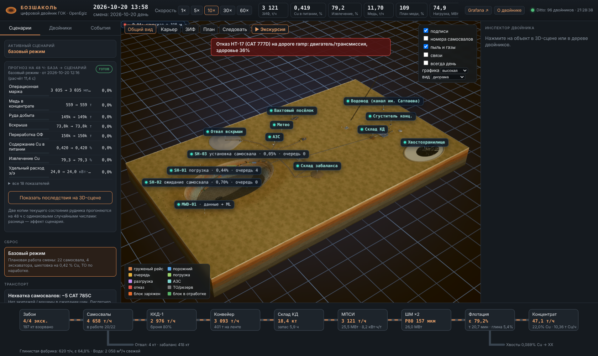
Бозшаколь, Павлодарская обл.: Центральный и Восточный карьеры (план горных работ 2023); сульфидная фабрика 25 Мт/год (ККД → МПСИ 28 МВт → 2 ШМ → флотация); глинистая фабрика 5 Мт/год; 220 кВ от Экибастузской ГРЭС-1. Парк: CAT 785C/777D, Hitachi EX3600 и EX870, CAT 993K, Sandvik D55SP. У 96 двойников — паспорт оборудования (23 модели) с источниками.
Начальник участка, главный инженер и диспетчер на ежемесячном совещании, где утверждают план горных работ на следующий месяц.
Как распределить технику между двумя карьерами и между рудой и вскрышей, чтобы выполнить план фабрики (2,74 Мт руды в месяц) и не съесть вскрытые запасы. Двойник проигрывает 48 ч расстановки и показывает руду и медь за месяц и запасы каждого карьера через полгода — до того, как технику переставили.
Ошибка расстановки не видна сразу: руда есть, а вскрыша на другом карьере отстаёт. Пример: у Восточного через полгода 0,2 мес запаса; подбор плана находит расстановку с 2,4 мес при той же руде. Наш двойник показывает последствия решения, а не только где едет самосвал.
# чистая Ubuntu 24.04 + Docker sudo apt-get install -y make make bozshakol # платформа + 113 двойников + модель + 3D make verify # сквозная проверка make calibrate # модель против отчётов KAZ Minerals make plan-backtest # рекомендация на новых событиях make twin-status # сводка из Ditto make scenario P=heavy_rain make scenario-reset
| Что | Где |
|---|---|
| 3D-пульт диспетчера | localhost:8095 |
| Grafana · 11 дашбордов (просмотр без входа) | localhost:3000 |
| Двойники в Ditto | localhost:8080/api/2/things/kz.bozshakol:site |
| Дерево двойников OpenEgiz | Grafana → OpenEgiz → Twins |
make verify проверяет: 113 двойников — дети ГОК, у каждого тип OpenTwins; модельное время идёт (MQTT → Ditto); точки в InfluxDB (Ditto → Telegraf); пульт и прокси Ditto; сценарий «остановка ККД» туда и обратно.
Модель публикует Ditto protocol modify /features — как полевой шлюз. В InfluxDB напрямую не пишет.
Пульт ничего не считает сам: всё, что видно, — признаки двойников в Ditto через прокси с серверной аутентификацией.
Изменено ядро: память Ditto/InfluxDB под 113 двойников, провайдер дашбордов, цели make.
| Узел | Двойники | шт |
|---|---|---|
| Центральный карьер | экскаваторы EX3600 ×3, погрузчик 993K; 10 взрывных блоков; радар бортов; газы; пыль; съезд, заезды | 19 |
| Восточный карьер | EX3600, EX870; 5 взрывных блоков; съезд | 8 |
| БВР | Sandvik D55SP ×4, классификатор пород по MWD | 5 |
| Транспорт | CAT 785C ×20, 777D ×6, поливочная, 2 лёгкие машины, 9 дорог | 38 |
| Геология | склад забаланса, Северный и Восточный отвалы | 3 |
| ЗИФ | ККД, конвейер, склад КД, МПСИ, ШМ ×2, флотация ×2, сгустители ×2, ХХ, глинистая ф-ка, водовод, лаборатория ОТК, анализатор флотации | 15 |
| Энергия · ТОиР · ПБ | ПС 220 кВ, анализатор ГОСТ 32144, энергопрофиль, АЗС, ремзона, метео, пылемеры ×2, сейсмостанция, метки персонала ×4 (синт.) | 13 |
| ГОК · участки · прогноз | site, 10 участков (включая пульт control), whatif | 12 |
Самосвал — 18 состояний (рейсы, очереди, погрузка, АЗС, ТО, отказ, буксировка, резерв, нет топлива). Блок — 8 (запланирован → … → отработан). Экскаватор — 10 (включая «нет взорванной массы», «укрытие», «запрет под бортом»).
Каждый рейс несёт партию: Cu, Au, глина, крепость, x80. Партия смешивается в бункере ККД, едет 7,8 мин по конвейеру, перемешивается на складе и определяет энергию МПСИ, помол и извлечение.
| Модель | модель | простое правило | вывод |
|---|---|---|---|
| GeoMet → Cu блока | R² 0,16 | IDW 0,04 | лучше, влияет на модель |
| GeoMet → крепость | R² 0,48 | среднее 0 | влияет на модель |
| SiO₂ флотации сейчас | R² 0,37 | анализ 3 ч назад 0,24 | на 3 ч раньше, MAE та же |
| Нагрузка ГОК через 2 ч | MAE 3,16 МВт | «как сейчас» 3,65 | −13 % |
| Порода по MWD | 0,50 | прошлый цикл 0,95 | хуже — подсказка |
| Опасная смена (сейсмика) | AUC 0,60 | эксперт 0,63 | не лучше — подсказка |
| Извлечение по химии | R² −0,10 | среднее 0 | не подключено |
Две модели GeoMet: каждый новый взрывной блок получает Cu, Au и крепость из реальных скважин (уровень — по Бозшаколю) → бурение, экскавация, ККД, энергия МПСИ, шихтовка. Остальные модели проигрывают реальные записи в своих двойниках и показывают оценку рядом с фактом.
Все метрики — на данных вне обучения. Где ML не лучше простого правила (MWD, сейсмика), он показан как подсказка, а не основание для решения. Стенду ML-библиотеки не нужны: исполнение на чистом Python сверено со scikit-learn.
| Стандарт | Что считает двойник |
|---|---|
| ГОСТ 32144-2013 качество электроэнергии | pq-01 на ПС 220 кВ: Δf, δU, K_U и гармоники от безредукторных приводов мельниц, K_2U, фликер, провалы; 10 мин → окно в неделю; нормы 110–220 кВ |
| ГОСТ 14180-80 отбор и подготовка проб | lab-01: m = Q·b/(3600·v), N = 4V²/Δ², T = 60·M/(Q·N), категория однородности и K·d²; партия = смена (прил. 2) |
| ГОСТ 13170-80 влага | два параллельных определения, допуск п. 4.2, повтор; влажная масса концентрата |
| ГОСТ 24598-81 гранулометрия | ситовый анализ питания флотации, модуль √2 от 0,04 мм, −0,04 мм седиментацией |
Каждая смена закрывается анализами ОТК и балансом по трём продуктам ε = c(f−t)/(f(c−t)) — с невязкой против данных фабрики. Сценарий «ФКУ отключена» выводит K_U ≈ 2,9 % за нормы 2 %/3 %: прогноз на 48 ч показывает время в нормах 100 % → 0 %.
Дашборд «Нормы и контроль качества (ГОСТ)», двойники pq-01 и lab-01, шаг 10 экскурсии, make scenario P=harmonic_filter_off.
| Калибровка (24 ч базы, 3 запуска) · make calibrate | модель | 2023 год | 6 кварталов |
|---|---|---|---|
| Переработка, кт/сут | 89,4 | 90,2 | 87,6–98,0 |
| Cu в питании, % | 0,43 | 0,42 | 0,40–0,43 |
| Извлечение Cu, % | 79,5 | 79,2 | 76,8–80,0 |
| Медь, т/сут | 285 | 300 | 276–309 |
| Au: г/т · извлечение, % | 0,23 · 54,0 | 0,22 · 53,8 | 0,20–0,23 · 46–56 |
Ограничения как на производстве: бункер ККД 700 т, склад КД, предел мощности мельниц, места разгрузки, 4 бокса ремзоны, одна бригада заряжания, зона взрыва 450 м и допуск по CO, лимит скорости в дождь, запас ДТ с ж/д поставкой. 785C на съезде 10 % — 10–12 км/ч, ~120 л/ч; цикл 24 мин.
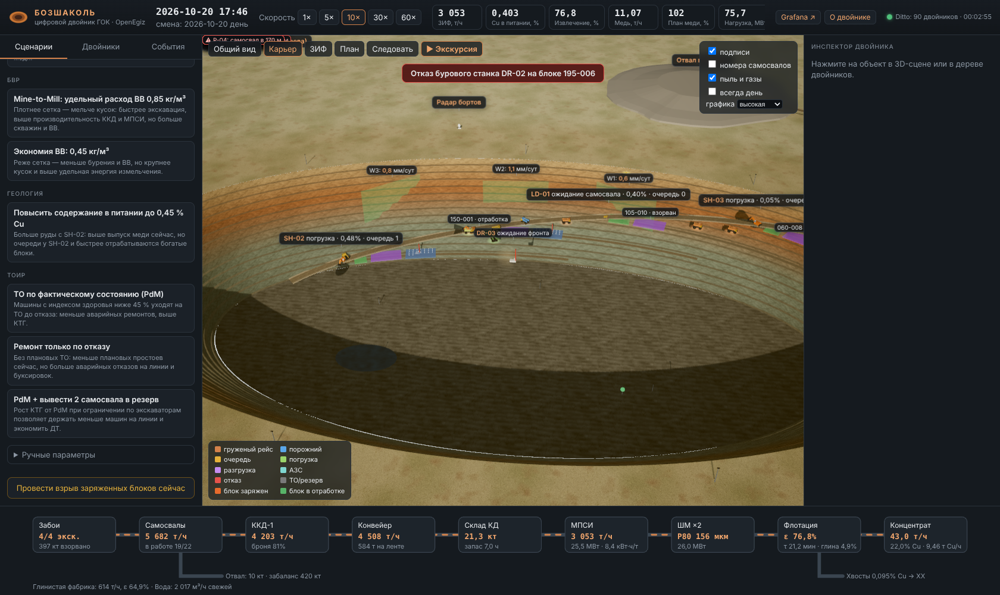
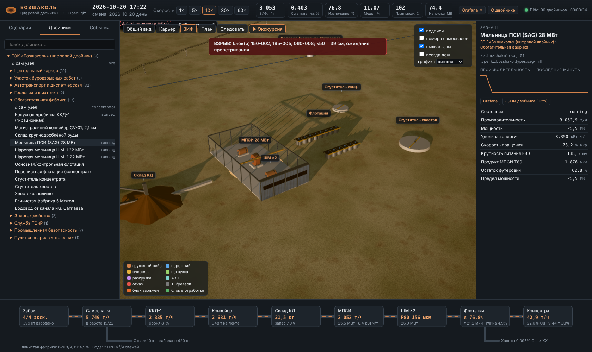
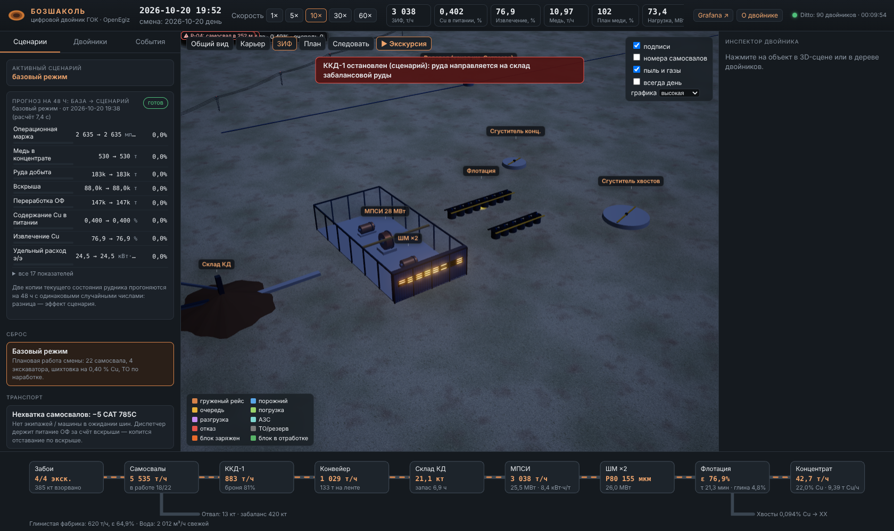
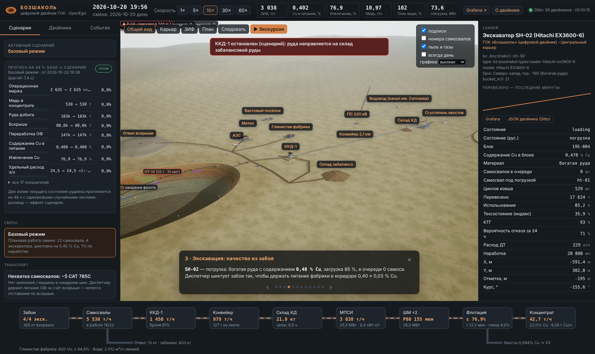
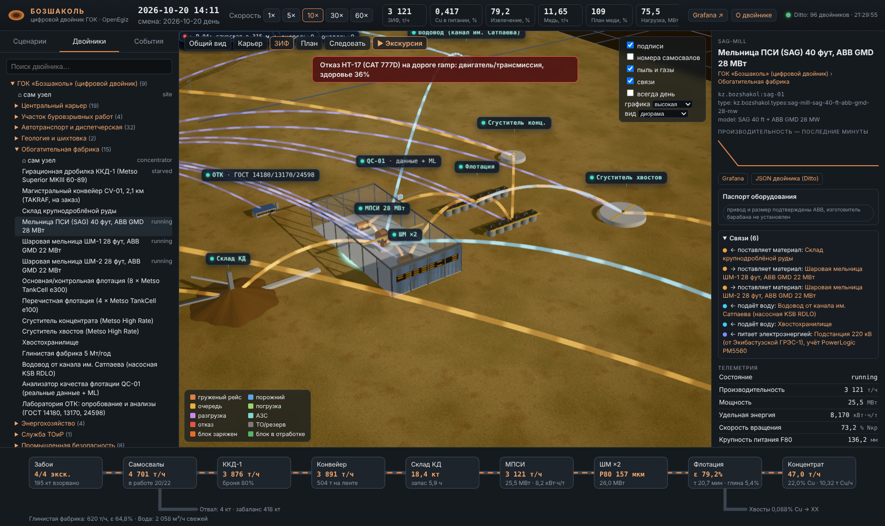
| Сценарий (make scenario P=…) | Как распространяется по двойникам | Δ медь | Δ маржа |
|---|---|---|---|
| crusher_outage · стоп ККД-1 | руда на склад забаланса → склад КД 6 ч → МПСИ голодает | −77 % | −85 % |
| heavy_rain · дождь 4 мм/ч | радар Центрального: жёлтый → красный → запрет под бортом → склад КД −77 %; медь за 6 мес −48 % | −14 % | −14 % |
| shovel_failure · стоп SH-02 | Cu в питании −4 %; Восточный отдаёт больше руды и выбирает свои запасы: медь за 6 мес −6 % | −3,5 % | −3,5 % |
| peak_shaving · МПСИ −20 % в пик | экономия на тарифе < потеря меди | −3,7 % | −4,0 % |
| dispatch_fixed · без оптимизации | медь за 48 ч выше, но запасы съедены: недобор 2,4 Мт руды за полгода, медь за 6 мес −2,9 % | +8,8 % | +7,6 % |
| high_grade · цель 0,45 % Cu | больше рейсов на SH-02; вскрытая руда Центрального через полгода 3,4 мес вместо 3,9 | +5,8 % | +5,5 % |
| plan_balance · план месяца | 4 CAT 785C на Восточном, вскрыша 2 600 / 800 т/ч, ТО по состоянию: та же руда, запасы через полгода 4,4 и 1,6 мес вместо 3,9 и 0,2 | +0,9 % | +0,6 % |
| plan_east_push / plan_east_strip | 45 % руды с Восточного — его запасы кончаются, медь за 6 мес −10 %; 25 % и вскрыша 900 т/ч — запасы растут до 1,2 мес | +0,2 / +0,7 % | −0,5 / +0,8 % |
| pdm · ТО по состоянию | освободившиеся самосвалы везут вскрышу (+9 %): запасы Восточного 1,5 мес вместо 0,2 | +0,7 % | +0,5 % |
| truck_shortage, pf_up/down, road_closure, speed_limit, reactive, fleet_optimum, harmonic_filter_off | вскрыша −10 % при −5 самосвалах; ВВ → x80 → МПСИ ±7 % (установившийся); объездная +4 % ДТ; ГОСТ 32144: 100 % → 0 % | −0,5…+0,5 % | −0,4…+0,4 % |
База и сценарий считаются на одной копии состояния и одних случайных числах (у каждой машины свой генератор), поэтому разница — эффект решения, а не шум. Отмена: «Базовый режим» или make scenario-reset.
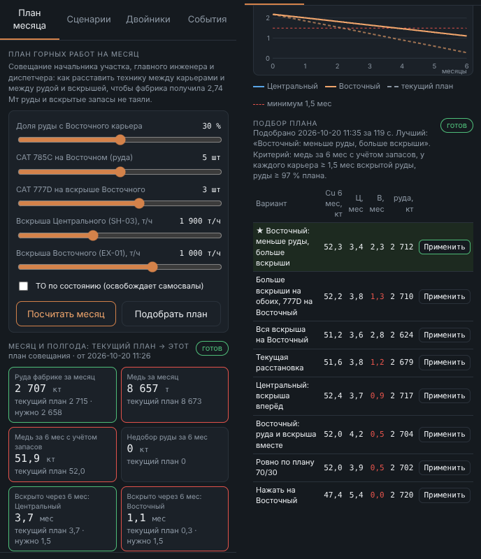
Долю руды с Восточного, CAT 785C на его руде, CAT 777D на его вскрыше, план вскрыши обоих карьеров, ТО по состоянию.
48 ч модели → руда и медь за месяц, медь за 6 мес с учётом запасов, вскрытые запасы обоих карьеров по месяцам (норма — 1,5 мес).
8 расстановок по 48 ч из одного состояния. Лучшая: 25 % руды с Восточного и три 777D на его вскрыше — та же руда, запасы через полгода 3,6 / 2,4 мес вместо 3,9 / 0,2, медь за полгода та же.
| 10 новых наборов: среднее (мин–макс) | текущий план | рекомендованный |
|---|---|---|
| Руда фабрике за месяц, кт (норма ≥ 2 658) | 2 713 (2 690–2 726) | 2 699 (2 682–2 715) |
| Медь за 6 мес с учётом запасов, кт | 51,9 (51,4–52,3) | 52,0 (51,7–52,5) |
| Вскрытая руда Центрального через 6 мес, мес | 3,8 (3,8–3,9) | 3,5 (3,4–3,6) |
| Вскрытая руда Восточного через 6 мес, мес (норма ≥ 1,5) | 0,5 (0,0–1,0) | 2,0 (1,1–2,5) |
| Выполняет жёсткие условия | 0 из 10 | 8 из 10 |
Подбор сравнивает варианты на одних случайных числах (отказы, циклы, содержания), чтобы разница была эффектом плана. Здесь выбранный и текущий планы заново проиграны из того же состояния на 10 других наборах событий.
Текущий план ни разу не обеспечивает Восточный запасами, рекомендованный — в 8 случаях из 10; руда и медь не падают. Два промаха — простой единственного вскрышного экскаватора Восточного за 48 ч.
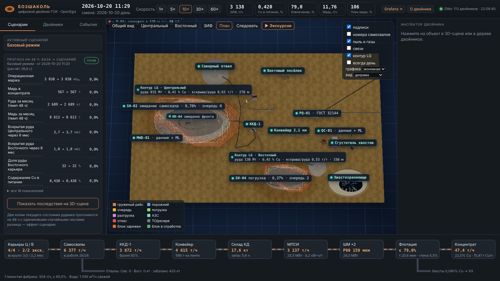
Блоки 30 м, борт 42°. Задача о максимальном замыкании решена точно как минимальный разрез графа (Picard, 1976) — как в псевдопотоковых оптимизаторах. ~5 с на оба карьера.
| Предельный карьер | руда | Cu | вскр./руда |
|---|---|---|---|
| Центральный, 270 м | 815 Мт | 0,41 % | 0,63 |
| Восточный, 150 м | 138 Мт | 0,42 % | 0,53 |
Коэффициенты вскрыши идут в учёт вскрытых запасов плана месяца. Блочная модель синтетическая: скважины GeoMet, уровень 0,38 % Cu и ресурсы 936 Мт по отчёту KAZ Minerals 2015 — метод настоящий, контур не проектный.
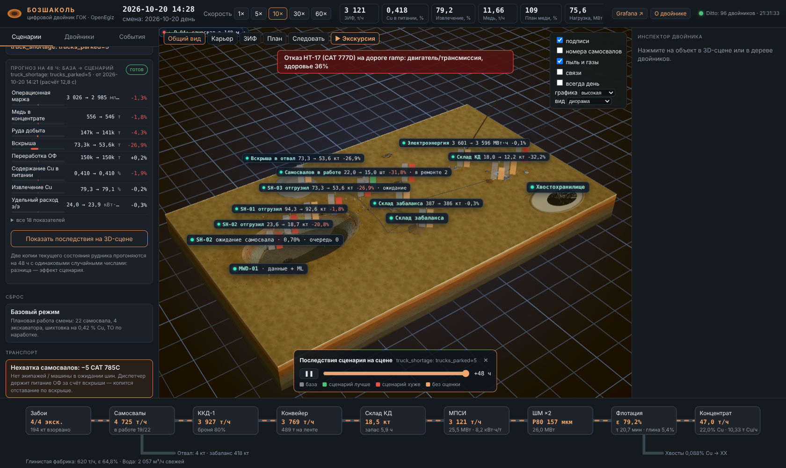
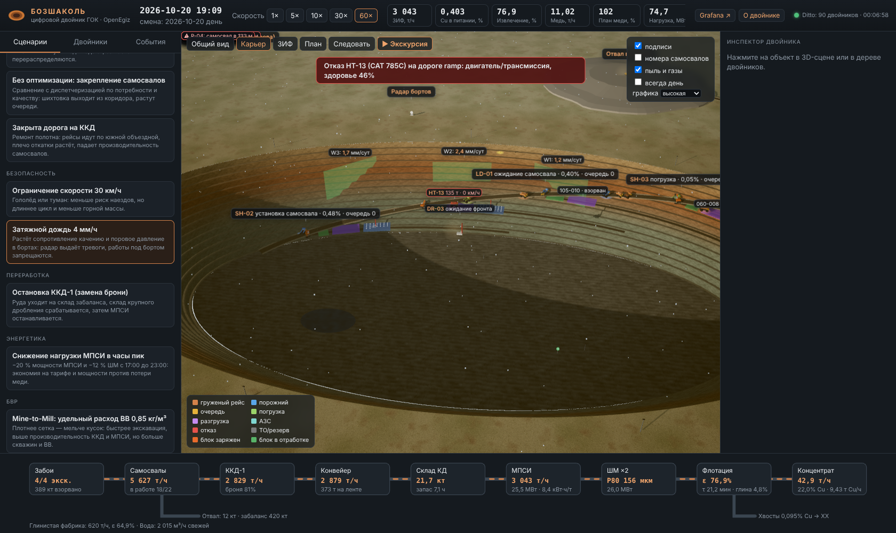
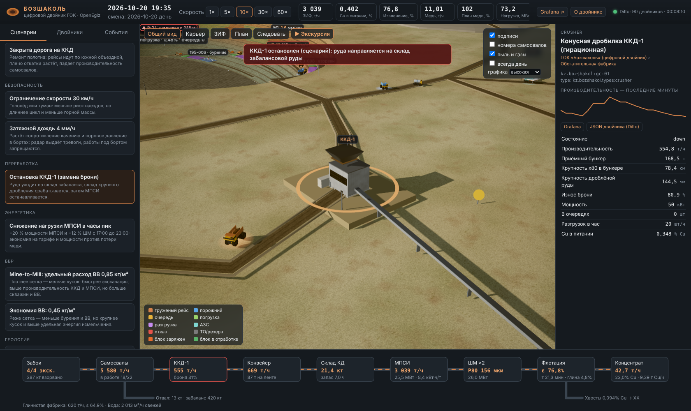
Граф дорог, тяговая модель, диспетчер по потребности и качеству, рудоконтроль по рейсу, АЗС.
Поле Cu/глины/крепости, блоки, коридор 0,42 ± 0,03 % с обратной связью.
MWD, выбор блока по запасу взорванной массы, заряжание, окна, эвакуация, Kuz-Ram, Mine-to-Mill.
ККД с броней, конвейер, склад, МПСИ (мощность), Бонд, кинетика флотации, глинистая ф-ка, вода, ХХ.
ПС 220 кВ по 10 потребителям, тарифные зоны, пик 15 мин, плата за мощность, ДТ, CO₂.
Бортовой мониторинг → расчётный индекс техсостояния; по отказу / наработке / PdM; ремзона, КТГ, MTTR.
Радар бортов с методом 1/v, CAS, пыль и газы после взрыва, поливка, погода.
Два карьера → руда за месяц и вскрытые запасы через полгода; вскрыша участков — по контурам Лерча–Гроссмана.
48 ч, база и сценарий на общих случайных числах; 27 KPI, включая маржу, месяц и полгода; подбор плана из 8 вариантов.
Источники: KAZ Minerals Production Reports 2023–2024; KAZ Minerals Site visit presentation (2015); mining-technology.com — Bozshakol; спецификации CAT 785C/777D, Hitachi EX3600-6, Sandvik D55SP; Cunningham (Kuz-Ram); Bond (1961); Teale (1965); Fukuzono (1985); Caterpillar Performance Handbook; план горных работ Бозшаколь 2023 (ОВОС, ТОО «ECO AIR»); KAZ Minerals Annual Report 2015; Lerchs, Grossmann (1965); Picard (1976).